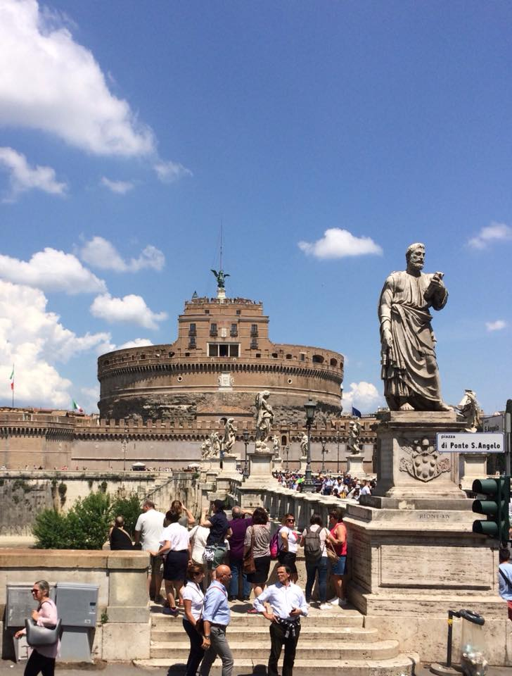
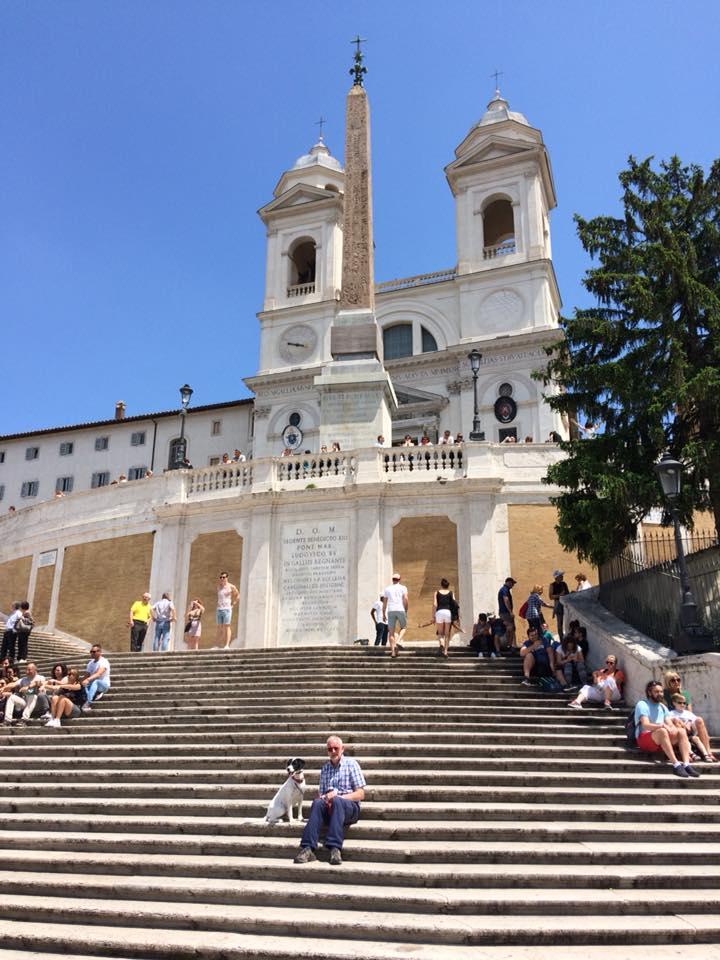
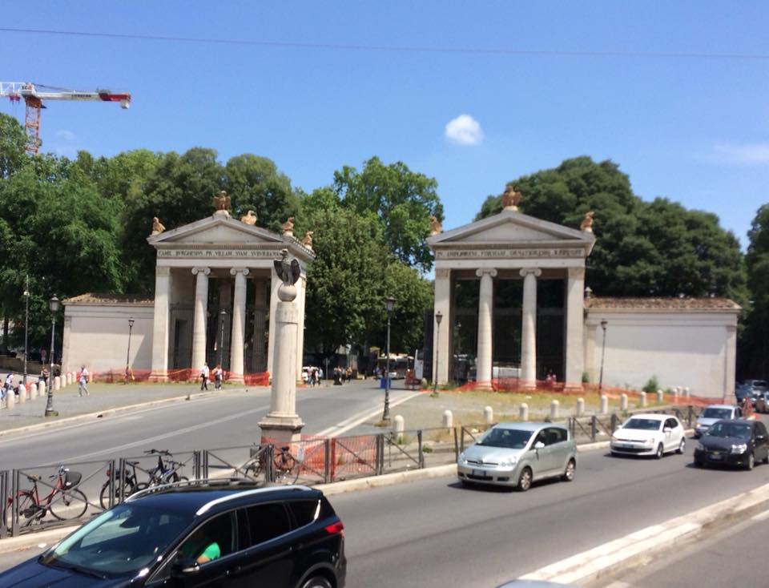
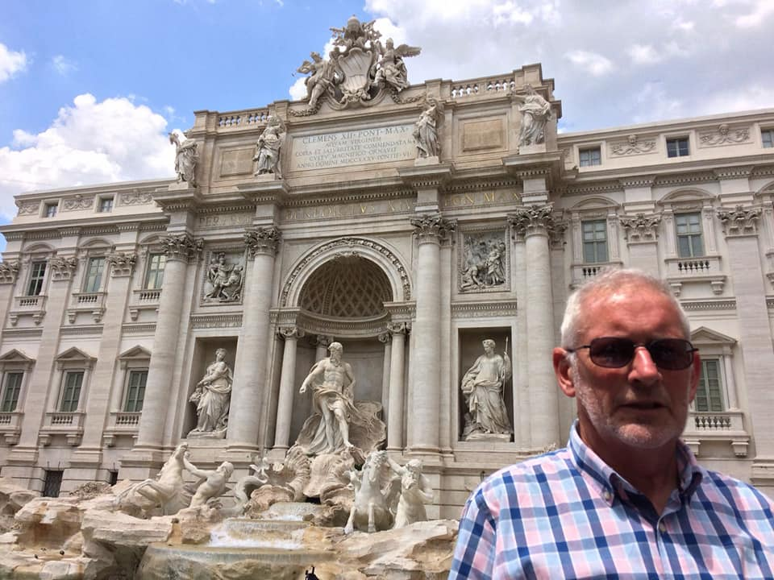
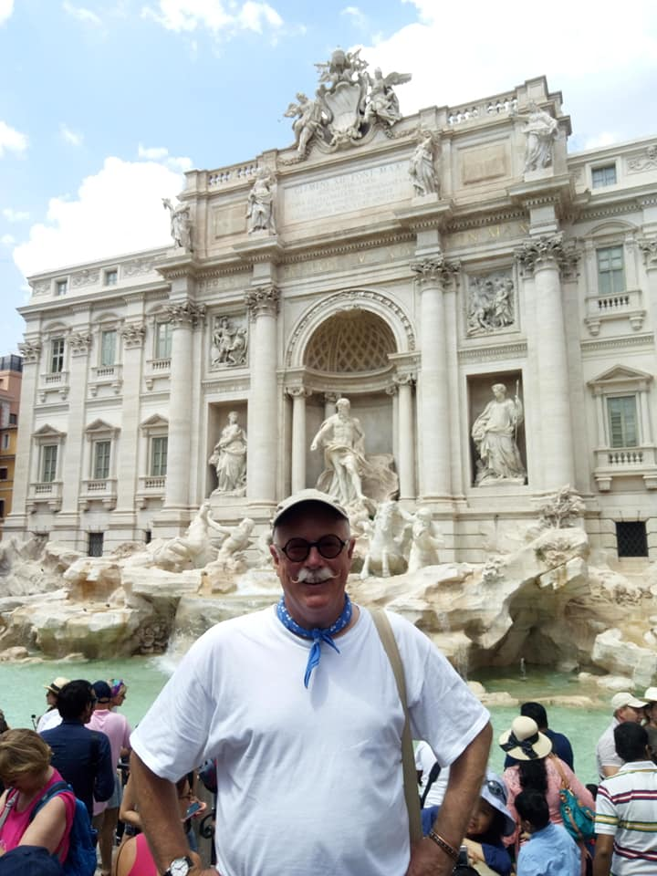
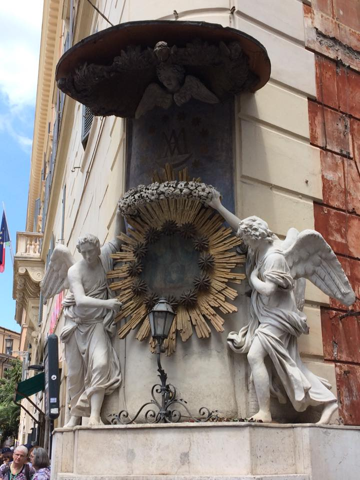
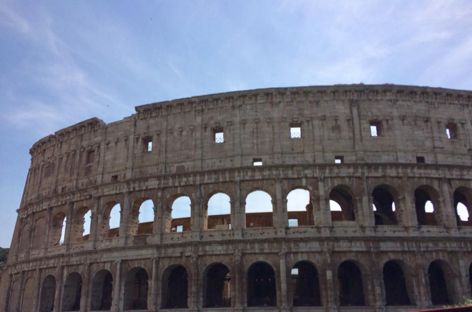
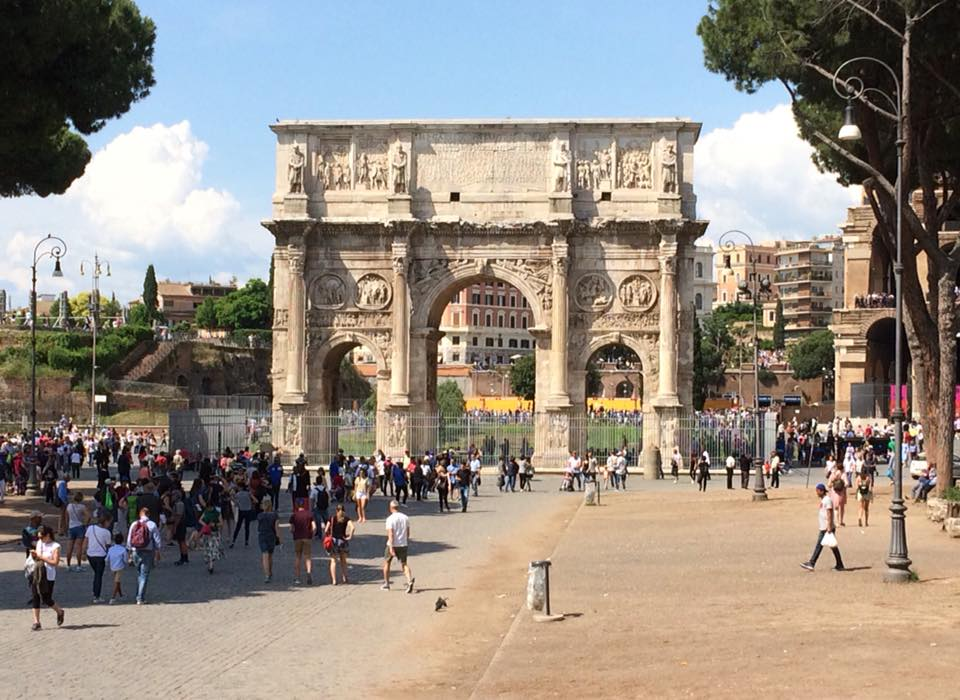
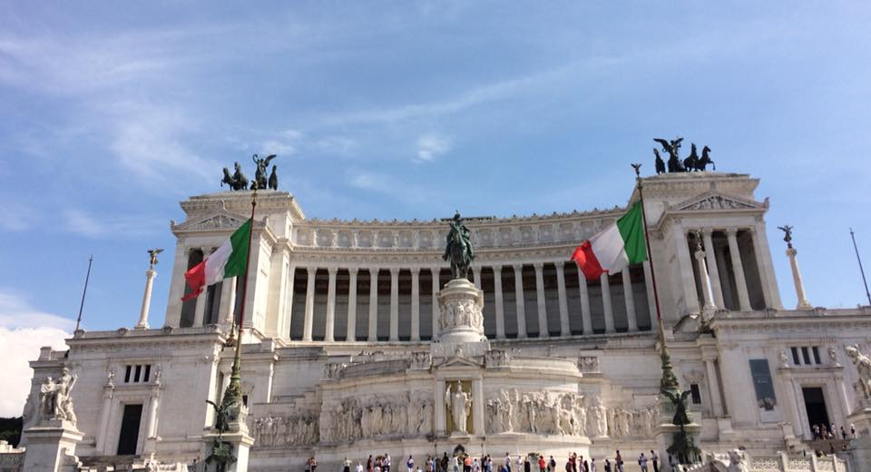

The last time I was in Rome was in 1995 (23 years ago!) when I came to the Opera with Shirley Thomson. It was January and I don’t think I’ve ever felt so cold. So it was a pleasant surprise to return on a sunny day and see the sights - Castel Sant'Angelo, Spanish Steps, Palazzo Borghese, Colosseum, Arch of Constantine, Piazza Venezia - without freezing. Also, at the Trevi Fountain, we think we've arrived at the Fountain of Eternal Youth. Tell us when you see us next ...
a








